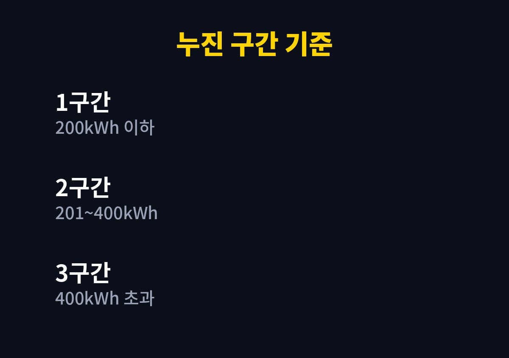
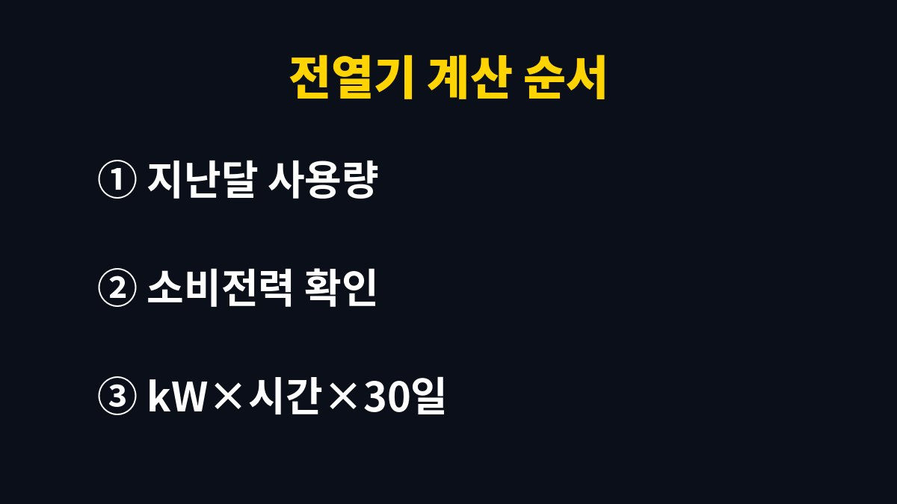

전기요금 누진제 구간은 주택용 기준으로 7~8월을 뺀 달에 200kWh와 400kWh에서 나뉜다.
한 달 사용량이 400kWh를 넘으면 넘은 만큼에 가장 비싼 단가가 붙으므로, 겨울에 전열기를 들이기 전에는 지난달 사용량부터 본다.
한국전력 주택용 전기요금표는 한 달 사용량을 세 구간으로 나눈다.
1~6월과 9~12월은 200kWh 이하, 201~400kWh, 400kWh 초과로 나누고, 7~8월에는 경계가 300kWh와 450kWh로 올라간다.
구간이 올라가도 전체 사용량이 아니라 경계를 넘은 부분에만 높은 단가가 붙는다.
대신 기본요금은 그달 사용량이 속한 구간 기준으로 정해져서, 경계를 살짝 넘긴 달은 체감이 크다.
같은 410kWh라도 1월에는 3구간이지만 8월에는 2구간이다.
여름 고지서에 익숙한 채로 겨울에도 같은 감각으로 쓰면, 경계가 낮아진 걸 놓치고 고지서를 받고서야 알게 된다.
| 구간 | 1~6월·9~12월 | 7~8월 |
|---|---|---|
| 1구간 | 200kWh 이하 | 300kWh 이하 |
| 2구간 | 201~400kWh | 301~450kWh |
| 3구간 | 400kWh 초과 | 450kWh 초과 |

이 경계는 주택용 저압과 고압이 같고 단가만 다르다.
관리비에 전기요금이 묶여 나오는 아파트는 세대별 계산 방식이 단지마다 달라 관리사무소에 물어야 정확하다.
1인 가구나 낮에 집이 비는 집은 이 구간에 머무는 경우가 많다.
이때는 전열기를 조금 더 써도 2구간 단가가 붙는 정도라 계산이 단순하다.
다만 전기장판과 히터를 함께 켜는 습관이 붙으면 한 달 만에 구간이 바뀐다.
전열기는 제품마다 소비전력 차이가 커서 광고 문구보다 라벨에 적힌 W 숫자로 계산해야 맞는다.
가장 신경 쓸 구간이다.
소비전력 1kW 히터를 하루 3시간씩 30일 쓰면 사용량이 90kWh 늘어난다.
지난달 사용량이 320kWh였던 집이라면 이 히터 하나로 3구간에 들어간다.
한겨울 두세 달만 그렇게 넘겨도 고지서 숫자가 눈에 띄게 달라진다.
이 구간에서는 줄이는 1kWh마다 가장 비싼 단가가 빠진다.
집 전체를 전열기로 데우기보다 쓰는 방 하나만 데우고 문을 닫는다.
전열기는 타이머로 켜는 시간을 정해 두면 한 달 사용량을 미리 셈하기가 훨씬 쉬워진다.
가스보일러와 전열기를 어떻게 나눌지는 가스요금 고지서와 함께 놓고 정한다.
사용량은 한국전력 고객용 앱 한전ON이나 종이 고지서의 사용량 칸에서 확인할 수 있다.
고지서 사용량은 검침일 기준이라 달력의 1일부터 말일까지와 기간이 다를 수 있다.
난방을 시작한 달과 그 전 달을 나란히 놓고 보면 늘어난 양이 바로 보인다.
고지서에 작년 같은 달 사용량이 함께 적혀 있다면 그 숫자와도 비교한다.

해 보면 대기전력 줄이기만으로 구간을 바꾸기는 어렵다.
멀티탭을 끄는 습관이 나쁘지는 않지만, 구간을 가르는 건 대부분 히터와 건조기, 전기장판처럼 열을 내는 기기다.
이번 달 고지서가 오면 사용량 숫자 하나만 먼저 본다.
경계에 가깝다면 전열기를 늘리기 전에 계산부터 하면 된다.
구간을 하나 낮추려 애쓰기보다 3구간에 들어가지 않는 선만 지켜도 겨울 고지서 부담은 줄어든다.
고지서 계산이 맞지 않거나 관리비 속 전기요금이 이상하면 한국전력 고객센터 123이나 관리사무소에 묻는 편이 빠르다.
참고 자료: 한국전력공사 「주택용 전기요금표」(2026년 11월 확인)
※ 2026년 기준 공공기관 안내를 바탕으로 정리한 글이며, 집 구조와 제품에 따라 결과가 다를 수 있어 제품 설명서를 함께 확인하길 바란다.